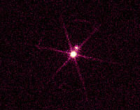
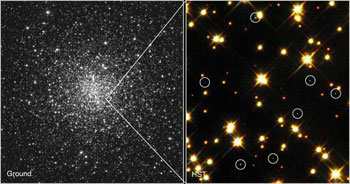

Credit: NASA/CXC/SAO
White dwarf stars mark the evolutionary endpoint of low to intermediate mass stars like our Sun. Fusion processes in the cores of these stars cease once the helium has been converted to carbon, since the contracting carbon core does not reach a high enough temperature to ignite. Instead, it contracts until it squeezes all of its electrons into the smallest possible space they can occupy. The resulting electron pressure arises due to quantum mechanical effects, and stops gravity from compressing the core further. A white dwarf is therefore supported by the pressure of electrons rather than energy generation in its core.
Once the core has stopped contracting, the white dwarf has a temperature of over 100,000 Kelvin and shines through residual heat. These young white dwarfs typically illuminate the outer layers of the original star ejected during the red giant phase, and create a planetary nebula. This continued radiation from the white dwarf, coupled with the lack of an internal energy source, means that the white dwarf begins to cool. Eventually, after hundreds of billions of years, the white dwarf will cool to temperatures at which it is no longer visible and it will become a black dwarf. With such long timescales for cooling (due mostly to the small surface area through which the star radiates), and with the age of the Universe currently estimated at 13.7 billion years, even the oldest white dwarfs still radiate at temperatures of a few thousand Kelvin, and black dwarfs remain hypothetical entities.
Due to their high temperatures and small size, white dwarfs are found below the main sequence in the Hertzsprung-Russell diagram.
White dwarf stars are extreme objects that are roughly the same size as the Earth. They have densities typically around 109 kg/m3 (the Earth has a density of around 5×103 kg/m3) meaning that a teaspoon of white dwarf material would weigh several tonnes. The easiest way to picture this is to imagine squeezing the mass of the Sun into an object about the size of the Earth! The result is that gravity at the surface of the white dwarf is over 100,000 times what we experience here on Earth, and this pulls the atmosphere of the star into an extremely thin surface layer only a few hundred metres high.

Credit: Harvey Richer (University of British Columbia, Vancouver)/NASA/NSSDC
Another curious property of white dwarfs is that the more mass they have, the smaller they are. The Chandrasekhar limit of around 1.4 solar masses is the theoretical upper limit to the mass a white dwarf can have and still remain a white dwarf. Beyond this mass, electron pressure can no longer support the star and it collapses to an even denser state – either a neutron star or a black hole. The heaviest observed white dwarf has a mass of around 1.2 solar masses, while the lightest weighs only about 0.15 solar masses.
Not all white dwarfs exist in isolation, and a white dwarf that is accreting material from a companion star in a binary system can give rise to several different eruptive phenomena. Cataclysmic variables result from either the build-up of a heavy surface layer of hydrogen on a white dwarf, or instabilities in the accretion process, while Type Ia supernovae are thought to be the explosion of a white dwarf star that has exceeded the Chandrasekhar limit.